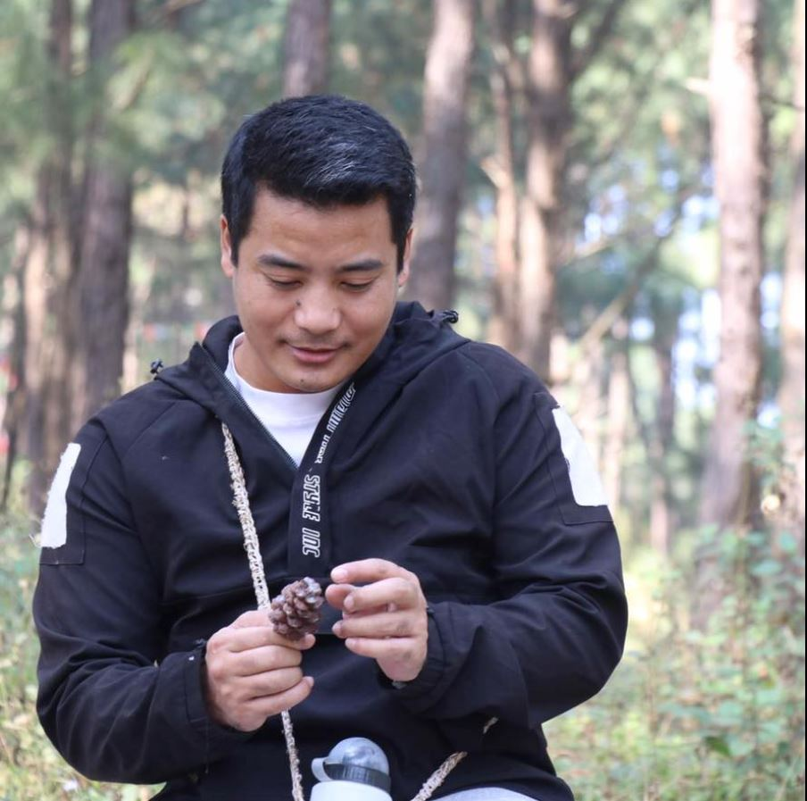

Comprehensive Curriculum

Well-equipped Labs

Skilled Faculty

Our department of BSc CSIT is responsible for providing students with a high-quality education in computer science and information technology, as well as practical skills that prepare them for a successful career in the field.
The department offers a comprehensive curriculum that covers a wide range of topics, including programming languages, algorithms and data structures, computer networks, database systems, artificial intelligence, software engineering, and web development, among others. The curriculum is designed to provide students with a strong foundation in both theoretical and practical aspects of computer science and information technology.
The department usually provides well-equipped computer labs that offer access to the latest hardware and software technologies. Students can experiment with programming languages and work on various projects in a hands-on manner.
The department also offers internship ...
Read MoreThe coursework covers a wide range of topics, including programming languages,computer networks, artificial intelligence, software engineering, and web development, among others.
We purse extra professional courses can help BSc CSIT students to enhance their skills and knowledge, and to stand out in the competitive job market.
-YUBARAJ RAI
Web design is the process of creating and designing websites. It involves the use of various design tools and technologies to create a visually appealing and functional website that meets the needs of the users. Web design includes various aspects such as layout, color, typography, images, graphics, and user interface.

-DIPEN MAHARJAN
Web design is the process of creating and designing websites. It involves the use of various design tools and technologies to create a visually appealing and functional website that meets the needs of the users. Web design includes various aspects such as layout, color, typography, images, graphics, and user interface.

SAGAR KC
Python is a popular high-level programming language that was first released in 1991. It is designed to be easy to read and write, and it emphasizes code readability and simplicity. Python is an interpreted language, which means that code written in Python is executed directly by the Python interpreter, without the need for compilation.